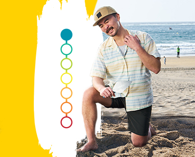

RINVOQ (upadacitinib)
once-daily pill
Tame symptoms of moderate to severe eczema
RINVOQ helps heal your painful skin in two ways—by significantly reducing the itch and clearing the rash of eczema
Fast Relief
Relief from itch symptoms in as little as 2 days
Rapid & Significant
Skin Clearance
Visible results in as little as 2 weeks
Long-term Results
Maintained skin clearance in studies up to 1 year
Select Important Safety Information
[Important Safety Information summary text would be inserted here by authorized personnel]
Meet RINVOQ patients like Maddy
[Introduction text about patient stories]
Maddy
[Patient story text]


[Quiz question dropdown]

ISI
What is the most important information I should know about RINVOQ?
[Complete ISI summary text would be inserted here by authorized personnel]
IMPORTANT SAFETY INFORMATION
[Complete regulatory ISI text would be inserted here by authorized personnel - this includes boxed warnings, contraindications, warnings and precautions, adverse reactions, drug interactions, use in specific populations, and clinical study information]